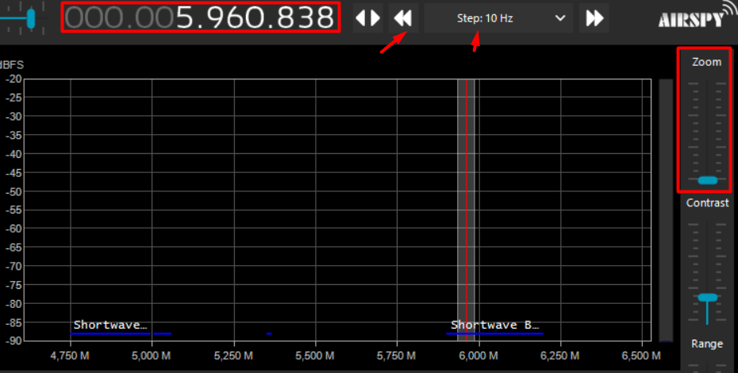
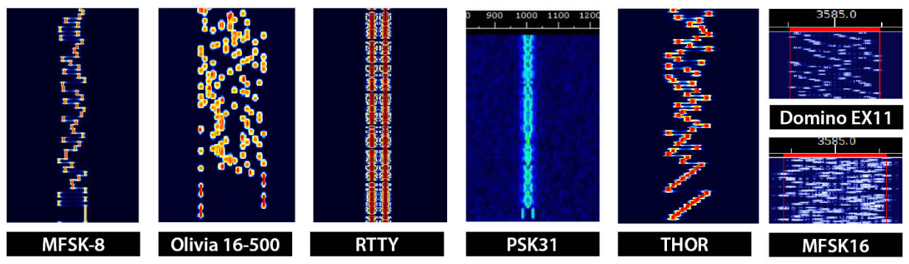

Introdução
O objetivo desse minicurso é incentivar dicentes e outros interessados a aprender mais sobre software defined radio, servindo como porta de entrada para o mundo de DX e tecnologias de rádio no geral. Todo o material aqui apresentado é básico e visa ser um norte para que os leitores pesquisem melhor os temas por conta própria. :)
~ Ainda em construção. Para sugestões e relacionados mandar mensagem por discord para helô#7070.
Dongle RTL
O que é SDR?
A sigla significa “Software Defined Radio”, ou seja, softwares substituem funções que normalmente seriam hardware num rádio. A adaptabilidade e consequente praticidade desse sistema faz com que a popularidade do SDR cresça e eventualmente torne obsoleto o uso de rádios analógicos.
Diversas aplicações militares, médicas e civis dependem de radiocomunicação. A facilidade de acesso à diversas bandas e o possibilidade de processamento de variados sinais sem a necessidade de equipamento diverso, custoso e de difícil transporte demonstra a primazia do SDR. A liberdade para o usuário de criar seus próprios protocolos e projetar o software desejado trazem ainda mais vantagens.
As implementações usadas atualmente são em FPGA, DSP ou processadores de uso geral, como em computadores comuns, esta última sendo a mais acessível para amadores. Nela, uma antena, equipamento de amplificação RF, um sintonizador e conversores ADC configuram a aparelhagem externa básica para a recepção. Isto tudo podendo ser compactado em antena, cabos e um dongle. O resto do trabalho se dará digitalmente.
Quais os SDR acessíveis ao público?
Os dongles RTL-SDR recebem esse nome pelo uso do microchip RTL2832U da Realtek, originalmente usado para DVB (Transmissão de Vídeo Digital). A maior parte deles utiliza os sintonizadores R820T ou R820T2 da Rafael Micro, que estão para ser descontinuados, ou o E4000 da Elonics. É interessante pesquisar qual sintonizador é usado no modelo que se pretende adquirir, já que influencia na qualidade do sinal passado.
Outra peça a ser considerada é o TCXO (Temperature Compensated Crystal Oscillator) ou outra compensação de variação de frequência de acordo com a mudança de temperatura. A falta de correção, nesse caso, faz com que o dispositivo esteja “conectado” a uma certa frequência diferente da indicada, e requer uma correção do usuário.
Evidentemente, cada aparelho cobrirá certa extensão de frequências. Essa parte da escolha é relativamente pessoal, mas é claro que a maioria dos usuários desejará ter acesso a maior quantidade de opções possível. A diferença costuma aparecer nas ondas curtas/HF (ainda assim, é possível sintonizar SW com modificações de hardware na maioria dos produtos que não indicam alcançá-las em suas faixas de frequência).
Não tão importante, mas interessante de se observar, é o conector com a antena. Certos RTL-SDR fazem a conexão usando SMA, outros MCX, etc. E por esse meio também pode ser possível passar corrente DC no cabo coaxial para outros aparelho conectados entre a antena e o SDR, desde que o dongle suporte Bias-Tee. Essa funcionalidade permite o uso direto de amplificadores, por exemplo.
Bandas de rádio
O que são bandas de rádio?

As bandas de rádio são seções do espectro eletromagnético designadas para certas funções a partir de certas convenções. As separações são feitas por frequência/comprimento de onda, considerando que no espectro EM a velocidade das ondas é sempre a mesma, caracterizar uma banda por faixa de frequência ou comprimento não faz diferença.
De acordo com a ITU (International Telecommunication Union), as caracterizações usadas são desde ELF (Extremely Low Frequency) com 3 à 30Hz até THF (Tremendously High Frequency) com 300 à 3000GHz. A IEEE segue padrões com nomeação parecida, mas divisão mais específica nas ondas de frequência mais alta (microondas). Geralmente a denominação “ondas de rádio” tem seu limite em algum ponto entre microondas e a faixa infravermelha.
As bandas catalogadas pela ITU tem “larguras” crescentes. Por exemplo, a faixa HF vai de 3 até 30MHz, já a seguinte faixa VHF comporta 30 até 300MHz. Isso se dá por conta da largura de banda usada por diferentes aplicações em cada banda, que costuma ser maior nas faixas com maior energia.
Mas por que separar?
Sabe-se que a frequência/comprimento das ondas no espectro EM varia com os níveis de energia contidos nestas. As ondas são idealmente propagadas de formas diferentes, algumas são melhor transmitidas mais próximo do solo, já outras por reflexão na atmosfera, etc. Cada aplicação envolvendo transmissão e recepção delas vai trabalhar em uma banda mais adequada. Considerando esses fatores, comunicação telefônica, aviação, envio de dados de satélites meteorológicos e até troca de mensagens entre caminhoneiros em trânsito vão usar certas partes de bandas distintas para evitar interferência advinda de má organização e também procurar as faixas mais adequadas para seu tipo de comunicação.
Atualmente, legislações proíbem transmissões de usuários não registrados e estabelecem especificações para uso de cada banda. É daí que vem o termo “rádios pirata”, caracterizadas por disseminarem sinais sem permissão.
Características de transmissão de cada banda
Para frequências mais baixas, anteriores as das ondas HF, costuma-se usar meios de propagação próximos a superfície terrestre. Essas ondas podem percorrer distâncias relativamente longas e seguir a curvatura terrestre devido a atrasos causados pela indução na ionosfera e no solo, que fazem com que elas se curvem também. Essa indução no solo também causa perda de energia, e faz com que frequências mais altas se dissipem muito facilmente.
Um uso curioso das faixas mais baixas do espectro é a comunicação com estações abaixo da terra ou fundo no oceano. Como essas ondas tem menores perdas em certas camadas, incluindo a água marítima, elas são comuns em transmissões para submarinos. No entanto, como são (obviamente) usadas bandas de largura limitada (sendo necessária grande largura de onda/pouca frequência), pouquíssimas informações conseguem ser mandadas por vez.
Pouco acima no espectro, se encontram as ondas HF, também chamadas historicamente de short waves. Nessa banda entre 3 - 30 MHz usa-se a reflexão da ionosfera para transmitir sinais. Essa camada entre Terra e Espaço é cheia de íons causados pelo bombardeamento de elétrons solares. É nesse plasma que certas ondas serão refratadas de volta para a Terra. A reflexão permite que certas transmissões viajem longas distâncias e sejam bem direcionadas, possibilitando comunicação continental ou trans-oceânica.
A interação entre plasma e onda nem sempre resultará nela voltando ao solo, as condições ionosféricas, frequência da onda e ângulo de incidência são fatores a se levar em conta. Frequências mais altas tendem a passar direto pela camada de plasma, enquanto frequências muito baixas são simplesmente absorvidas; mas claro, isso não significa que uma onda de 20 MHz sempre será refratada. Uma transmissão muito verticalizada passará para o espaço sideral bem mais facilmente, tanto como a ionização da ionosfera e outras condições atmosféricas também podem piorar ou inviabilizar sua chegada de volta ao solo.
Finalmente, para VHF e UHF, considerando as observações nos outros tipos de propagação mostrados, é comum usar-se line of sight propagation, consistindo em antenas altas distribuídas em distâncias menores, trocando informação de forma “verticalizada”. As ondas precisam, literalmente, ser mandadas até distâncias que ainda se consiga enxergar, ou seja, sem interrupção da circunferência terrestre. Para alcançarem espaços além desses é necessária a retransmissão do sinal ou certas condições bem específicas da atmosfera e angulação que permitam leve reflexão.
Em certos casos, para UHF e microondas usa-se um sistema de transmissão mais comum a aplicações militares, chamado de “tropo-scatter”. Como o nome sugere, camadas superiores da troposfera recebem um feixe bem centralizado de ondas, onde uma pequena parte delas sofre scattering e é refletida para uma área bem específica e calculada de volta na Terra. Apesar de útil para evitar interceptações, é pouco eficiente.
E, para deixar claro, essas formas de transmissão não seguem regras tão simples e concretas. As ondas eletromagnéticas dependem de milhares de características internas e externas para propagação. Os meios criados por profissionais são adaptados para cada condição influenciadora, com aplicação de muita técnica, cálculos e predição.
Uso das bandas
Uma pessoa comum tem maior contato consciente com VHF, banda mais usada para “TV” e “rádio FM”. Algumas comunicações militares também são feitas em faixas específicas nessa banda, e é nela que sinais de satélites de pesquisa e observação costumam retornar diversas informações. Em UHF estão as transmissões que permeiam todos os espaços ocupados atuais, por conta de sua pequena largura de onda, abrigam transmissões de roteadores de internet e celulares, mas não só. Essas e outras aplicações, como rádio amador, estão espalhadas pelas bandas seguindo a legislação do país ou região em que se está.
em construção.
SDR#
Existem diversos softwares para processamento dos sinais, mas nesse caso, SDR# (SDR sharp) será utilizado, já que conta com funcionalidades diversas e uma interface prática. Também é possível desenvolver e adicionar plug-ins.
Setup
No canto inferior esquerdo em “source” deve-se escolher o aparelho usado, que nesse caso, é um RTL-SDR USB.

Tuning
Para sintonizar a frequência desejada, pode-se clicar nos números, começando pela direita com Hertz, e prosseguindo à esquerda para Gigahertz. É possível também utilizar as setas duplas por meio de “jumps” especificados pelos steps selecionados no centro da opção. Por meio desses pula-se entre frequências.
Logo abaixo, nas faixas destacadas por sua recepção, também é possível arrastar a visualização pelas bandas com o mouse, seja por clique ou scroll. Para saber a frequência em que se encontra, é só olhar o valor embaixo sinalizado em Megahertz.
Por meio do zoom, na direita, é onde se consegue visualizar melhor os sinais no display, possibilitando visualizá-los em mais detalhes.
Áudio e modulação
Para decodificação do sinal, têm-se na esquerda a escolha de modulações, as quais são explicadas melhor em outra seção. Já “shift” é usado para correção da frequência de sintonização, já que em alguns aparelhos sem ajuste por temperatura pode ser necessário.
Em “filter” estão opções de “filtros”, funções geralmente sinusoidais usadas para apodização em processamento de sinais. Esses filtros atuam dentro da largura de banda sintonizada diminuindo interferências de outras estações próximas e outros ruídos. Na seleção “order” se aumenta ou diminui a largura dessa função. Quanto maior a ordem, menos interferência deve ser recebida, ainda assim, pode-se acabar perdendo informações da estação desejada.
Clicando na opção “squelch” é onde se escolhe suprimir ruído, aqueles barulhos indesejados que, se não muito intensos, podem ser atenuados para que se tenha um melhor entendimento do sinal desejado. O que acontece é que sinais mais fracos são mutados. A intensidade dessa opção pode ser controlada pelo valor logo embaixo. Do seu lado está “CW shift”. CW significa continuous wave, modo antigo e usado geralmente para código morse. Esse shift constitui a diferença de frequência entre o sinal recebido e transmitido.
“FM stereo” habilita som estéreo em rádios FM quando marcado. Já “lock carrier” automaticamente centraliza a sintonização na carrier frequency (frequência portadora). Uma carrier wave (onda portadora) é a onda modulada que “traz” as informações em si, mas a frequência portadora por si só indica a frequência central entre as duas bandas laterais (double-sidebands) de um sinal modulado recebido, as quais realmente “contém” a informação. Apenas ativo junto a opção anterior, “anti-fading” usa-se da centralização habilitada para evitar que recepções ruins, fracas e atrasadas da rádio sejam ouvidas.
Opções de display
Ao lado direito do display da intensidade das frequências estão as opções deste. A primeira é o “zoom”, já explicado anteriormente. Em seguida, está o contraste, que serve para aumentar a diferença entre as cores usadas pras intensidades. Embaixo tem-se “range”, que limita ou expande
Modulações
A modulação, dentro de uma tal convenção, consiste em uma operação sobre ondas periódicas para que estas assumam a forma específica de um tal modelo que permita passagem de dados. Essa codificação permite embutir informações em ondas eletromagnéticas. Já a de-modulação ocorre para que possamos compreender o sinal de forma mais fácil, transformando este em som ou algum outro formato visual humanamente perceptível (ou no caso de digimode, que seja decodificado para a máquina, que algum software depois decodifica para a recepção humana).

Modulações analógicas
Compreende inputs de sinais “naturais”, como a voz humana. A informação a ser modulada é composta de valores que podem variar continuamente.
AM
Apesar de, atualmente virem perdendo espaço, as rádios AM fazem parte da vida de qualquer pessoa que procura se informar por meio do rádio durante uma comuta diária. Sua sigla vem de amplitude modulation, tipo de modulação analógica que usa a amplitude do sinal para conceber a codificação dos dados.

Apesar de sua popularidade, sinais AM são originalmente pouco eficientes em sua forma padrão. Para isso desenvolveu-se um ramo da modulação analógica chamado SSB (single side-band) que, como o nome diz, possui somente uma banda lateral, diferente da DSB que possui duas. O recebimento do sinal requer maior complexidade pra decodificação, mas o uso de SDR reduz o custo que viria do equipamento necessário.
FM

Comum quando se fala de rádios musicais, o sinal de frequência modulada (FM) transmite informações por meio de mudanças em sua frequência, enquanto a amplitude da onda se mantém a mesma. Comparando FM e AM, o modo de frequência modulada tem maior resistência à interferências EM externas, além de, normalmente, ser mais eficiente energeticamente.
Existem duas variações deste tipo de modulação que trabalham com larguras de banda diferentes do FM padrão: WFM (wide-band), mais larga e NFM (narrow-band), menor. Dessa forma, WFM permite melhor qualidade de som (maior quantidade de “dados”), mas NFM ocupa menos espaço de banda. Geralmente, NFM é usada com walkie-talkies e outras formas de two-way radio, comuns em aplicações militares. Para transmissões de TV usa-se WFM, mantendo melhor fidelidade e qualidade.
Diferentes modulações podem ser utilizadas para quase todas as bandas do espectro de rádio, mas suas diferenças fazem com que sejam adotados padrões nas transmissões. De VHF pra cima, é mais comum o uso de frequência modulada combinada à propagação line of sight. É daí que vem o dito de que “FM não pega tão longe da antena quanto AM” ou “passando do morro a rádio para”. Como AM é mais comum em VHF para baixo, bandas de comunicações normalmente propagadas pelo céu, seu alcance será claramente maior. Em razão da necessidade de FM para uma alocação de frequências bem maior, não faria sentido usá-la em bandas pouco largas, o uso de AM é mais racional.
CW
Esta sigla designa “Continuous Wave”, e constitui a primeira forma de transmissão de rádio, usada para o Código Morse. Como diz o nome, sua amplitude e frequência são contínuas, e o sinal é ligado e desligado para codificação. Hoje em dia alguns usuários de rádio amador ainda se comunicam por este meio por diversão.
Na maior parte das vezes, as comunicações em CW se dão no começo das bandas e ocupam pouco espaço, utilizando uma largura de banda bem estreita.
(Tecnicamente, código morse é um digimode, mas sua classificação fica confusa dadas as características de seu uso e surgimento).
Modulações digitais
Os sinais que serão modulados são provenientes de máquinas, tendo valores discretos e variando em intervalos de tempo específicos. Também chamada de digimode ou data mode, relativamente mais moderna, possibilita separar ruídos indesejados na recepção bem mais facilmente.
Lembrando que essas modulações não se reduzem apenas à comunicação por rádio, mas são utilizadas nas mais diversas aplicações de envio de dados por meio de ondas eletromagnéticas.
ASK, FSK e PSK
ASK, ou “Amplitude-shift keying” é o termo geral para modulação digital de amplitude. Seu uso mais simples binário (OOK/BASK) considera um sinal “alto” como 1 e a “ausência” de amplitude como 0. No geral, ASK pode ser usado pra conferir à certas sequências específicas de bits uma certa amplitude.
Nesse mesmo estilo se dão FSK e PSK, respectivamente trabalhando com frequência e fase da onda. Nos nomes BFSK e BPSK, o B especifica seu uso binário simples.

AP(S)K
Os usos mais simples das modulações descritas acima têm limitações em relação à quantidade de informações que podem ser passadas por tempo, e estão sujeitas a interferências e erros na recepção quando se tenta ultrapassar um certo marco de símbolos mandados em pequenos intervalos. Para atenuar esses efeitos, combinações de modos e codificações surgiram, sendo APSK um bom exemplo.
Aqui, amplitude e fase da onda são modificadas, cada combinação representando um símbolo/uma sequência de bits. Sua representação é feita em “constelações” (cada ponto advém de certa amplitude e fase únicas àquela sequência de bits):

A partir dos modos acima surgiram novos digimodes, muitos dos quais desenvolvidos por amadores que, com algum tipo específico de transmissão em mente, criaram codificações específicas, ou seja, protocolos:

Antenas
Provavelmente o item mais importante para recepção das ondas eletromagnéticas é ela, a antena. Esses pedaços de metal são importantes demais para evitar, mas complexos o suficiente para querer-se explicar apenas o básico necessário. Para cada tipo de aplicação existe uma antena ideal, porém, felizmente, uma já pode ser o suficiente para receber muitas transmissões. É comum que os kits RTL-SDR já venham equipados com uma antena de dipolo básica, que se estende até no máximo um ou dois metros, ou uma antena monopolo pequena.
O primeiro passo no entendimento de antenas “simples” está no tamanho delas e sua relação com largura de onda. Ao passo que quanto maior a frequência de uma onda eletromagnética, menor sua largura de onda, bandas de frequências mais baixas requerem antenas maiores. Isso porquê a largura de onda está intimamente ligada com o design do transceptor, principalmente nos monopolos. Essas antenas costumam ter entre metade à um quarto da largura da onda alvo. (Pra entendimento técnico sugiro: https://en.wikipedia.org/wiki/Mast_radiator). As monopolo são muito usadas por rádios FM.
Ganho e SNR
Um dos conceitos de classificação de antenas é o ganho. Simplificadamente, o ganho de uma antena está ligado ao seu alcance relacionado à uma faixa de radiação. Um alto ganho em uma antena de transmissão faz com que seu feixe de ondas transmitidas seja estreito, mas permite que este alcance distâncias mais longínquas. Ou seja, a energia transmitida está focada em um caminho mais “apertado”. No entanto, o maior alcance nem sempre é um ponto positivo, já que quanto maior a distância percorrida pelo sinal, mais interferências no caminho. Essa quantidade de noise é representada pela medida signal-to-noise ratio (SNR), em decibéis.

Direção e polarização
Uma antena omnidirecional irradia para todas as direções horizontalmente, sendo as monopolo e dipolos deste tipo. Já as antenas do tipo Yagi-Uda são chamadas de direcionais, mandando o sinal para uma direção específica.
O conceito de direção da antena não deve ser diretamente confundido com a polarização do sinal. A polarização é especificada a partir da direção do campo elétrico da onda eletromagnética irradiada. Este pode ser classificado como horizontal (EF paralelo à superfície terrestre), vertical ou circular (LHC, rotacionando para à esquerda, ou RHC, rotação à esquerda). Na hora de captar um sinal, sua polarização importa para saber como posicionar a antena.
Por curiosidade, outra antena bem comum de ser vista no dia-a-dia são as antenas parabólicas. Este tipo é considerado direcional de altíssimo ganho, e usado geralmente em transmissões por satélite, radares e em sinais de bem alta frequência, incluindo micro-ondas. Seu sistema é diferente das antenas mais simples, já que usa uma estrutura refletora que leva (ou transmite) o sinal ao foco (aquela parte central). Elas podem ser muito grandes mas estar tratando sinais de largura de onda muito pequena.
Condições climáticas
Um dos fatores a ser observado quando se trata da transmissão de ondas eletromagnéticas são condições atmosféricas. Ondas de rádio são refletidas, refratadas, absorvidas, entre outros fenômenos, pelas condições da atmosfera em seu caminho. Esses obstáculos causam distorções e perdas de sinal. Por isso, existem condições ideais para uma boa recepção.
Troposfera
Camada mais baixa da atmosfera, onde a maior parte dos fenômenos climáticos são observados e também o primeiro meio de propagação das ondas provindas da Terra. É nesta área que a temperatura decresce com a subida de altura, o que causa uma mudança no índice de refração do ar, modificando o ângulo do caminho das ondas. O cálculo da refração na atmosfera se dá da seguinte maneira:

Em casos “padrões” a diminuição da refração com o aumento de altitude produz um certo caminho de propagação, no entanto, mudanças climáticas que causam uma menor ou maior queda de refração por altitude modificam esse caminho. Quedas muito bruscas são suficientes para causar a reflexão da onda e mantê-la presa entre uma certa sub-camada da atmosfera e a Terra ou outra sub-camada, possibilitando alcançar pontos normalmente não acessíveis. Esse fenômeno é mais comum durante inversões térmicas (camada baixa fria e seca, camada alta quente e úmida).

Ionosfera
em construção.
GNU Radio
em construção.
Mais
em construção.
WebSDR da Univesidade de Twente
WebSDR mantida pela universidade de Twente localizada na Holanda. Como outros WebSDR disponíveis on-line, é uma boa porta de entrada pra entender melhor as funcionalidades e opções disponíveis na mundo dos SDR:
http://websdr.ewi.utwente.nl:8901/
Voice of Korea
Rádio SW estatal norte-coreana “Voice of Korea”, com transmissões em diferentes línguas e uma programação de notícias e música. Os horários estão em UTC. Deve-se observar a área-alvo das transmissões para procurar WebSDR dentro de seu perímetro: